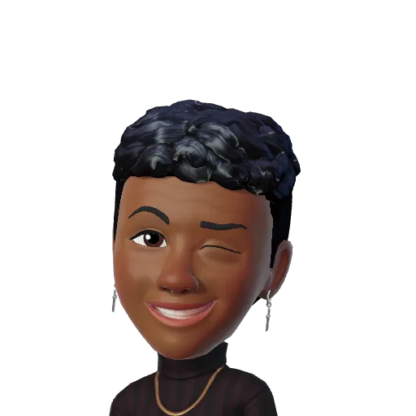

A ProArcade vai muito além de um site e ideias criativas ,
a história por trás dessa
página é um grupo de pessoas com muitos sonhos, mas com um objetivo em comum, que é a constante busca
pelo saber.
E o que nos motiva é a determinação e a força motriz
que é o Instituto PROA em
nossas vidas.
Pois, “Não existe transformação sem aprendizado e conhecimento.”
Com o nosso desenvolvimento, a ProArcade faz parte do nosso projeto de UC2 resultado de muito
trabalho e dedicação.
A proposta é reviver a nostalgia do início dos jogos na década de 80,
onde atingiu o pico de sucesso criando jogos icônicos
que se tornaram símbolos dessa era
e influenciaram a cultura dos videogames.
Italo

Guilherme M.
Guilherme C.
